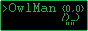

Banners
Web banners are a easy way of getting people to view a product that you want to sell to them. You may be selling an idea, or a personal website, nether-less, a lot of people on Neocities have made web banners for their website, only a very small percentage of which are able to make a profit from their site.
A lot of web banners found on Neocities use the size of 88x31, this idea of 88x31 sized banners probably began around October of 1996, from Netscape Communications Corporation, a former subsidiary of AOL, with a banner advertising the now defunct browser, Netscape Navigator.
A lot of websites on Neocities have their own banners. Most banners on Neocities have the dimensions of 88x31 in size such as the examples shown below;

 It is important to remember that not all banners follow the rule of using this size, as seen with the banners below;
It is important to remember that not all banners follow the rule of using this size, as seen with the banners below;
How to Make A Banner
Having an 88x31 banner that other people can put on their site is a great start for building bridges between people, but before you get to work on making your one, you should think about what it should look like; think about if people will want to put your banner on their site.
Your banner should be as unique as possible and express what your website feels like.
Once you know what your banner will look like, you can get to work on it. You can make your banner in any art program you can get your hands on, some good programs are Paint.NET, GIMP, and Medibang Paint. But if you don't or can't install any of the tools listed here, you can always search the Web for paint tools.
You can find a blank 88x31 base plus more over at A.N.Lucas's website.
If you want to make your banner a GIF, so it moves, you can use the online tool GIF Maker.
If you want to submit a 468x60 banner to a pre-existing service, you can visit WSMZ's Bannerlink.
Links
Here are some helpful links that may help you on your way;
A.N. Lucas's 88x31 button Collection
OwlMan's Neocities Banners
Article on 88x31
eighty eight by thirty one
Netscape Now! by Jason Scott
Now!
Bannerlink ads